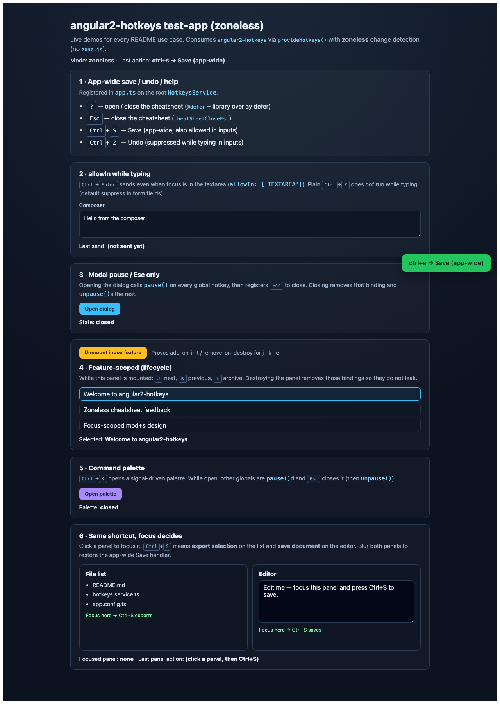
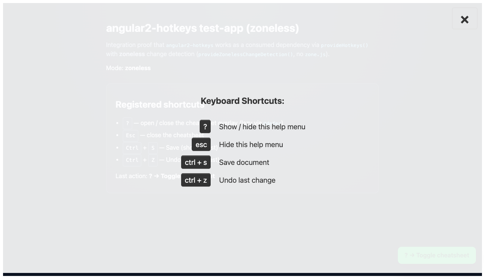

Migration phase tracker
1 Tooling cleanup Remove TSLint / Protractor / Codelyzer · ESLint + strictTemplates
2 Angular 16 → 20 Standalone + Signals + ESM Mousetrap baseline
3 Angular 20 → 22 @angular/* 22.0.5 · TypeScript 6.0 · zone.js 0.16 · ng-packagr 22 · Node 22.22+
4 Nx workspace nx / @nx/angular 23.1.0-beta.7 · project graph for lib + test-app
5 Signals input() Cheatsheet title uses signal input · setInput in tests
6 Test suite Service / directive / component / module · ≥80% coverage · 34/34 green
7 Packaging peerDependencies ^22 · sideEffects:false · exports via ng-packagr
8 Integration test-app Angular 22 consumer · provideHotkeys · ?, Esc, ctrl+s
Deprecated pattern inventory
Pattern
Was in
Replaced with
Phase
TSLint / Codelyzer / Protractor package.json, tslint.json ESLint + @angular-eslint 1 fullTemplateTypeCheck tsconfig.json strictTemplates: true 1 skipTemplateCodegen / strictMetadataEmit tsconfig.lib.json Removed (Ivy) 1 @NgModule declarations hotkey.module.ts standalone: true + provideHotkeys() 3 Subject<any> cheatSheetToggle hotkeys.service.ts WritableSignal<boolean> 4 BehaviorSubject + Subscription cheatsheet.component.ts signal + effect / computed 4 *ngFor / async pipe / [ngClass] cheatsheet.component.html @for / signal() / [class.in] 4 import * as Mousetrap + .default() service + directive import Mousetrap from 'mousetrap' 5 async from @angular/core/testing *.spec.ts waitForAsync 6 karma-coverage-istanbul-reporter karma.conf.js karma-coverage 1/6 event.srcElement only hotkeys.service.ts event.target || srcElement 4 style="display:none" on root cheatsheet html CSS .fade / .in visibility 4
Before / after — key changes
NgModule → provideHotkeys()
// BEFORE
@NgModule({
declarations: [HotkeysDirective, HotkeysCheatsheetComponent],
imports: [CommonModule],
exports: [HotkeysDirective, HotkeysCheatsheetComponent]
})
export class HotkeyModule {
static forRoot(options = {}) {
return { ngModule: HotkeyModule, providers: [...] };
}
}// AFTER
export function provideHotkeys(options = {}) {
return makeEnvironmentProviders([
{ provide: HotkeyOptions, useValue: options },
{ provide: HotkeysService,
useFactory: () => HotkeysService.create(options) },
]);
}
// HotkeyModule.forRoot kept @deprecated for BC
Subject → Signal
// BEFORE
cheatSheetToggle: Subject<any> = new Subject();
// ...
this.cheatSheetToggle.next();
this.cheatSheetToggle.next(false);// AFTER
cheatSheetToggle: WritableSignal<boolean> = signal(false);
// ...
this.cheatSheetToggle.update(o => !o);
this.cheatSheetToggle.set(false);
*ngFor → @for
// BEFORE
<div [ngClass]="{'in': helpVisible$|async}">
<tr *ngFor="let hotkey of hotkeys">
<span *ngFor="let key of hotkey.formatted">// AFTER
<div class="fade" [class.in]="helpVisible()">
@for (hotkey of hotkeys(); track hotkey) {
@for (key of hotkey.formatted; track key) {
<span class="cfp-hotkeys-key">{{ key }}</span>
}
}
Live keyboard shortcut demo
The integration test-app on port 4300 consumes the built library via
provideHotkeys(). Browser proof (Playwright):
? opens the cheatsheet overlay with registered shortcutsEsc closes the overlayCtrl +S fires Save and updates the toast / last-action line

test-app idle

cheatsheet open after ?
Embedded signal demo (no Mousetrap — illustrates the new API shape):
Toggle helpVisible signal
Simulate ctrl+s
State: closed · Last: —
Keyboard Shortcuts:
? Show / hide this help menu ⌃ S Save document ⌃ Z Undo last change
Test coverage
Library: 34/34 Karma tests passing · statements/lines ≥ 94% · branches ≥ 70%.